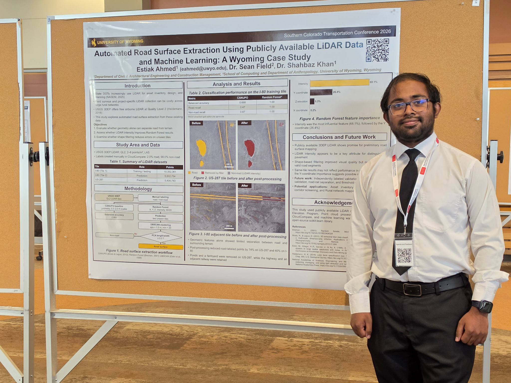

Transportation Infrastructure
Pavement condition assessment, transportation asset management, UAV-based inspection, and infrastructure decision support.
Civil Engineering · University of Wyoming
I am Estiak Ahmed, an M.S. student in Civil Engineering at the University of Wyoming, where I serve as a Graduate Teaching Assistant and Vice President of the UW ITE Student Chapter. My work combines transportation infrastructure, UAVs, computer vision, LiDAR, GIS, BIM, and data-driven engineering.
About
My current research centers on transportation infrastructure and pavement management, especially automated condition assessment using UAV imagery, geospatial data, and computer vision. I am interested in turning sensing and AI outputs into information that engineers can use for infrastructure management and decision-making.
My broader technical background includes remote sensing, Web GIS, LiDAR point-cloud analysis, BIM, fire and evacuation simulation, building environmental systems, and engineering education.
Research
A multidisciplinary focus connecting civil infrastructure, sensing, geospatial systems, and AI.
Pavement condition assessment, transportation asset management, UAV-based inspection, and infrastructure decision support.
Computer vision, YOLO/CNN workflows, LiDAR, remote sensing, SfM photogrammetry, UAV reality capture, and Web GIS for civil infrastructure inspection, BIM-integrated construction monitoring, and digital twins.
BIM, digital construction, fire safety modeling, evacuation analysis, thermal comfort, IEQ, and building performance.
Featured research
Acquiring UAV imagery and comparing computer vision models for pavement crack detection and pavement management. Photogrammetric workflows use DroneDeploy and Agisoft Metashape, including image masking to reduce vehicle-related reconstruction artifacts and improve orthomosaic quality. The first-author paper has been accepted for poster presentation at the 2027 Transportation Research Board Annual Meeting.
Scholarship
Estiak Ahmed, Ahmed Abdelaty, & Shahbaz Khan
Accepted for poster presentation at the 2027 Transportation Research Board Annual Meeting, Washington, D.C.
Estiak Ahmed, Sean Field, & Shahbaz Khan
Southern Colorado Transportation Conference, Pueblo, CO · October 22, 2026.

Anzum, A., Rana, M. J., Ahmed, E., & Rahman, S. (2025)
International Journal of Building Pathology and Adaptation
View DOIAhmed, E., Bhattacharjee, A., & Anzum, A. (2025)
View DOIBhattacharjee, A., Ahmed, E., & Rana, M. J. (2025)
View DOIJoy, M. K., Ahmed, E., & Anzum, A. (2026)
Presented at IConIC 2026, University of Florida.
Projects
Use the filters to explore work across transportation, AI, remote sensing, GIS, and building systems.
Developed a USGS 3DEP LiDAR road-extraction workflow using CloudCompare/CANUPO, Random Forest, DBSCAN, and PCA.
Benchmarked YOLOv8, YOLOv11, YOLOv12, and YOLO26 under identical training conditions.
Developed an ArcGIS JavaScript API application using ES modules, GeoJSON, custom CSS, filtering, heatmaps, popups, click-to-zoom, and layer controls.
Developed a BIM-based framework integrating fire and smoke analysis with pedestrian evacuation simulation for life-safety planning.
Studied UAV imagery, CNNs, and photogrammetry for structural element detection and measurement-oriented quality control.
Investigated a cloud-integrated UAV workflow aimed at improving fire detection and reducing false alarms in building applications.
Teaching
Department of Civil & Architectural Engineering and Construction Management, University of Wyoming
Conduct class sessions and support instruction in moist-air properties, psychrometrics, air-conditioning processes, comfort and health, indoor environmental quality, and heat transmission through building structures.
Develop homework assignments, answer keys, course materials, and assessments, and grade student work with technical feedback.
Served as primary lab and field instructor for 2+ sections totaling 40+ students. Led total-station positioning, leveling, topographic mapping, and field surveying practicums.
Graded and assessed approximately 120 first-year students across Civil Engineering, Architectural Engineering, and Construction Management.
Experience
Institute of Transportation Engineers, University of Wyoming.
University of Wyoming. Current instruction in HVAC of Buildings, following Engineering Surveying and Exploring CAECM.
University of Wyoming. Evaluated LLM and retrieval-augmented generation outputs for accuracy, relevance, and consistency. Assessed responses to transportation engineering drawings, including dimensions, specifications, notes, and technical details.
Contributed to evaluation work associated with the arXiv paper When More Documents Hurt RAG: Mitigating Vector Search Dilution with Domain-Scoped, Model-Agnostic Retrieval.
IFIC Bank PLC, Bangladesh. Supported customer account operations, fund transfers, and digital banking services within a One-Stop Banking model.
Technical Toolkit
Python, NumPy, scikit-learn, PyTorch, YOLO/CNN workflows, LLM/RAG evaluation
DroneDeploy, Agisoft Metashape, Pix4D, Meshroom, CloudCompare, SfM photogrammetry, image masking, orthomosaic generation
QGIS, ArcGIS Desktop, ERDAS Imagine, Web GIS, JavaScript
Autodesk Revit, Navisworks Manage, AutoCAD, Design Review
PyroSim, Pathfinder, ETABS, Robot Structural Analysis
Python, R, JavaScript, C, Fortran
SketchUp, Enscape, Lumion, Adobe Illustrator, Photoshop, Premiere Pro, Camtasia, Canva
Credentials
Leadership
Contact
I am happy to connect with researchers, faculty, transportation agencies, and industry professionals working at the intersection of civil infrastructure, sensing, and AI.